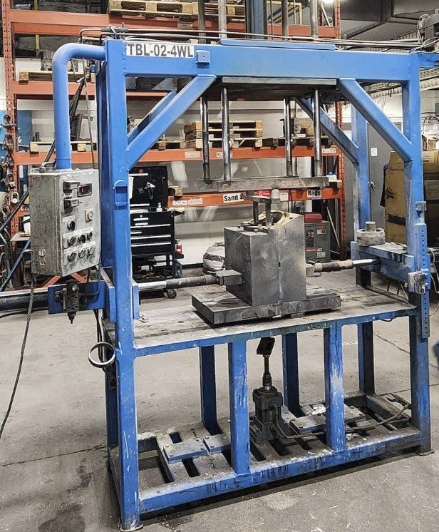
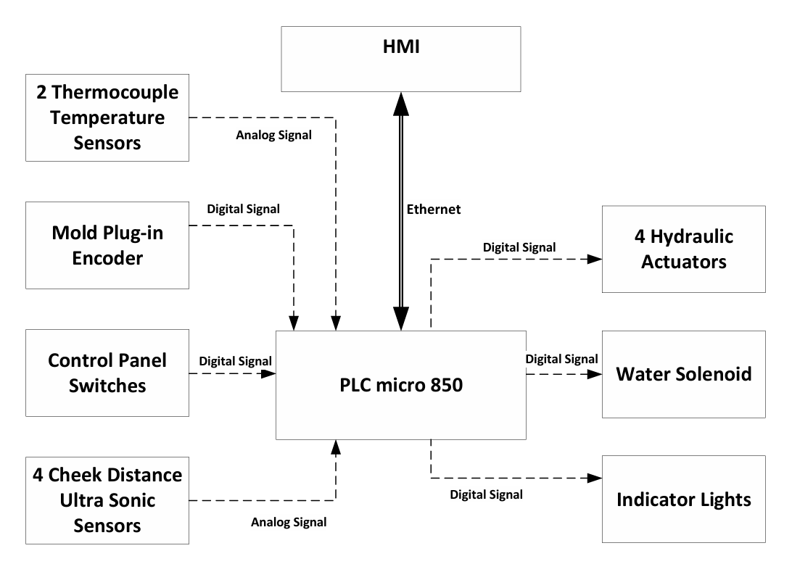
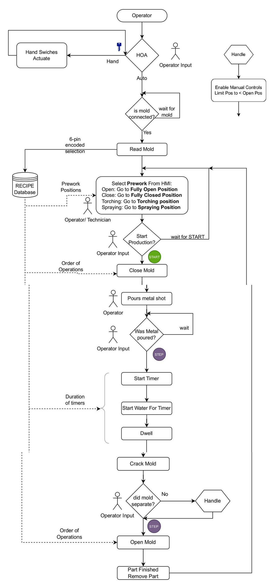
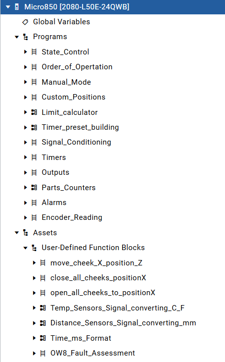
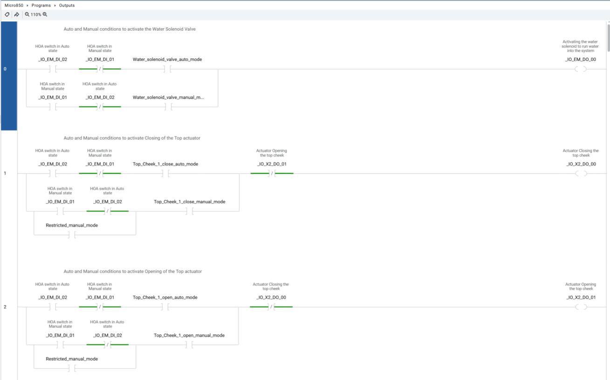

Capstone Case Study · Sept – Dec 2026 · In progress
Digitizing a Four-Way Casting Table
A foundry pours aluminum into permanent molds on a four-way table, and right now an operator runs the whole cycle by hand. We are replacing that with a PLC and an HMI, where the mold tells the controller which mold it is and the controller loads the right positions, order and timings for it. The software is written and running on a bench. The panel has not been delivered yet, so wiring and commissioning are still ahead. This is my capstone, done with a project partner.

What the machine does
A permanent mold is a steel mold that gets reused instead of being rebuilt out of sand every pour. The table holds one, and the moving sides of it, called cheeks, are pushed in and out by hydraulic cylinders. The cycle has the same shape every time: close the mold, pour the metal, spray water on the outside to pull heat out, let it sit, crack the mold open slightly to confirm the casting released, open the rest of the way, take the part out.
What is not the same every time is the mold. The shop runs several. Some have two moving cheeks, some three, some four. Each has its own travel distances, its own order for which cheek moves first, and its own cooling and dwell times. Run that by hand and the cycle is only as repeatable as the person running it, and a new operator has to learn each mold on its own.

One program, a recipe per mold
The whole design rests on one decision: nothing about a specific mold lives in the PLC code. The program knows how to move a cheek to a position and how to run a cycle. The numbers that make it a particular mold, which is six positions for each of four cheeks, which cheeks move together, and the water and dwell times, all sit in a recipe on the HMI.
The mold identifies itself. A six-pin connector on the mold is wired as a binary code, so plugging it in writes a number between 1 and 63 into the controller, and that number picks the recipe. Nothing plugged in reads as zero, and zero blocks automatic motion entirely, which means a mold that is not properly connected cannot be run.
The six positions are fully open, end of cycle, spraying, heating, cracked open and fully closed. Adding a new mold to the shop becomes a job for whoever runs the HMI rather than a job for whoever wrote the program. That was the point of doing it this way.

Position feedback, and why not limit switches
Limit switches are the obvious answer to "is the cheek where it should be", and they were the wrong answer here. Six positions across four cheeks is twenty four switches, and since every mold has its own geometry you would need a different set of them for every mold in the shop.
We used ultrasonic distance sensors instead, one per actuator, feeding 4 to 20 mA into the analog card. Position becomes a number in millimetres, so a recipe can ask for any position it likes without anybody touching the hardware.
The detail that took the most thought was what the sensor actually looks at. Aiming it at the cheek means the reflecting surface changes with every mold, and ultrasonic sensors are fussy about that. So the sensors point at a flat target plate mounted on the actuator rod. Same surface, same angle, every mold, and the plate moves with the cheek so the reading is still real position.
The sensor repeats to about half a percent of its range, which works out to roughly four millimetres, so the software calls a move complete inside a five millimetre band around the target rather than chasing an exact number. A move is also given a second to settle before the position is trusted, because the sensor only updates twice a second and hydraulics do not stop the instant the valve closes.
A sequence without a sequence editor
A casting cycle is a sequence, and a sequential function chart is the natural way to write one. The version of the programming software this project uses is the free one, and it has no SFC editor.
So we built the same structure in ladder by hand. An integer holds the current step. One set of rungs does the work for whichever step is active, a separate set watches for the condition that ends it and moves the counter on. Six steps: close to position, wait for the pour, run water, dwell, crack open, return to end of cycle. It is more verbose than drawing a chart, but it reads in order and anybody with the free software can open it and follow it.
The rest of the program is split by what it does rather than by what it controls, so each piece can be read on its own. Signal conditioning turns raw counts into millimetres and degrees. Limit calculation works out the deadband around the target. The motion blocks are user-defined function blocks, so one block covers moving any cheek to any position instead of twenty four near-identical rungs.

Where the operator stays in the loop
Pouring is done by a person with a ladle. The controller has no way to know the metal actually went in, so it does not pretend to. The cycle stops and waits for a button twice: once before it closes the mold, and once after the pour.
The crack open step exists for the same reason. Castings sometimes stick, and somebody needs to look before the mold opens all the way. If it did not release, there is a recovery mode that lets the cheeks close freely but only open as far as the end of cycle position, so a person working a stuck casting loose cannot accidentally drive a cheek out to its stop.
Mold temperature is read and displayed but does not hold the cycle. The client asked for it that way, since they judge the mold by eye and did not want a new reason for the machine to stop on them. It is a reasonable call for a first installation, and it is the sort of thing that can become an interlock later once there is real data behind a number.
Interlocks, and saying the same thing twice
Commands do not go straight to the valves. Readings are conditioned first, then either the sequence or the manual logic forms a command, then the motion blocks decide whether that command should still be running, and only the last layer energizes anything.
Every output rung carries the opposite direction as a normally closed contact, so the open and close solenoids on one cylinder can never both be energized no matter what the logic upstream asked for. The same interlock already exists in the command logic. Duplicating it is deliberate. One of them is the design, and the other is what catches the design being wrong.

Knowing when something is wrong
- A move that does not finish in its allotted time raises a major alarm and stops the cycle. That one condition covers a stuck cylinder, a failed sensor and a mechanical jam.
- The relay output module reports the real state of each contact. Comparing what was commanded against what came back, with a short filter so normal switching does not trip it, catches a welded contact or an open coil.
- A distance reading outside the sensor's valid range means something is in front of it, which on a casting floor usually means spatter or a dropped tool.
The stop that does not go through the PLC
The emergency stop is hardwired through a safety relay that removes power from the output devices. It does not pass through the controller and it does not depend on the program still scanning. The PLC sees that the stop was pressed so the HMI can say so, but the stopping itself happens either way.
That distinction matters more here than on anything else I have built. Hydraulic cylinders and molten aluminum in a jurisdiction with real machine guarding regulation means the risk assessment comes first and the design follows it, rather than being written up at the end to match what got built.
Where it actually stands
As of October 2026:
- Control narrative, I/O list, program structure and HMI screens are done.
- The ladder logic is written and exercises correctly on the bench.
- The panel is on order and the delivery date has slipped more than once. It is the only thing on the critical path.
- Several recipe values are placeholders. The real position numbers get measured off the machine once the sensors are mounted.
- Wiring, cold dry runs on hydraulics without metal, hot commissioning and operator handover are all still ahead.
We set the bench up on purpose so the software would not sit idle waiting on a shipment: a spare controller, the HMI, a loop calibrator driving the analog inputs, and spare sensors. Most of what is described above has been run that way. That is not the same as proving it on the machine, but it is the difference between showing up to wire a panel with untested code and showing up with code that only needs the real signals.
What this shows
Taking a manual machine and a loose goal and turning it into an I/O list, a control narrative and a program somebody else can maintain. Picking feedback that suits the problem instead of the obvious one, keeping machine-specific data out of the code, building a sequence without the editor made for it, deciding where a person has to stay in the loop, and knowing which part of a stop belongs in hardware.